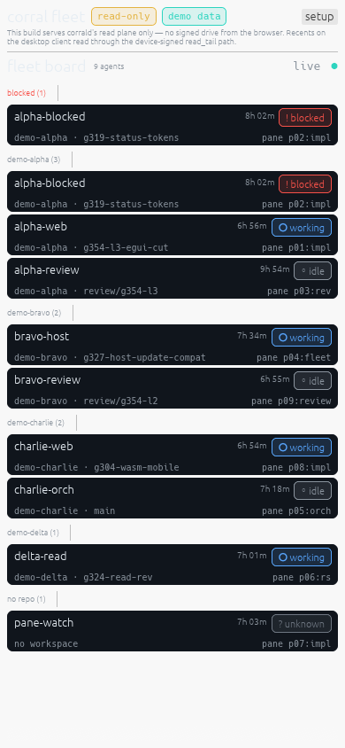
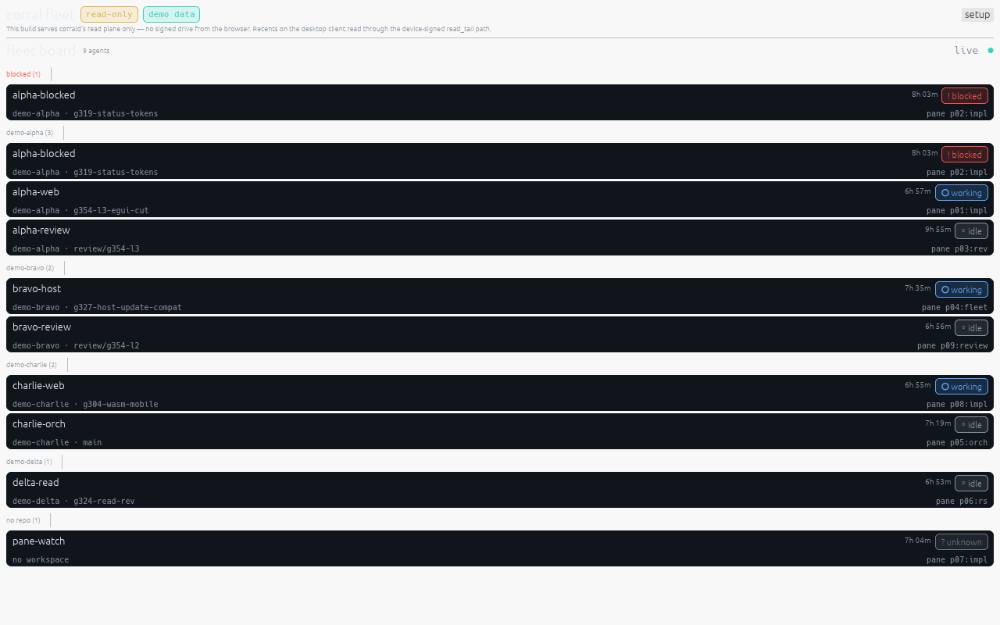

Corral board — static demo snapshot
Corral is an iOS-only read-only fleet board for herdr agents. This page is a static snapshot of the board rendered from bundled, fully fictional sample data (no live daemon, no web toolchain) — it is kept as a quick visual reference. The phone layout below is 390×844; the wide layout is 1280×800.

